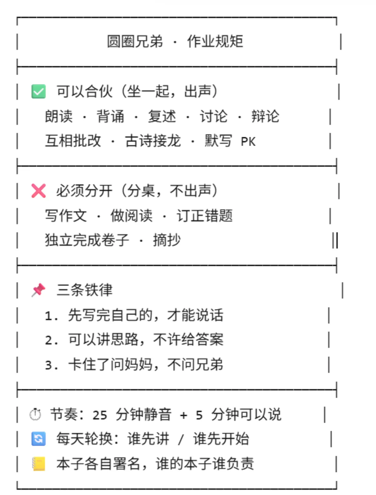
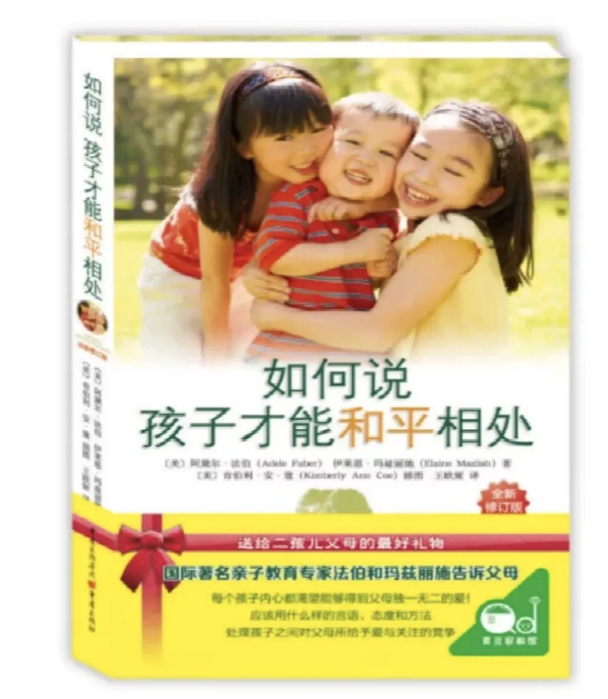
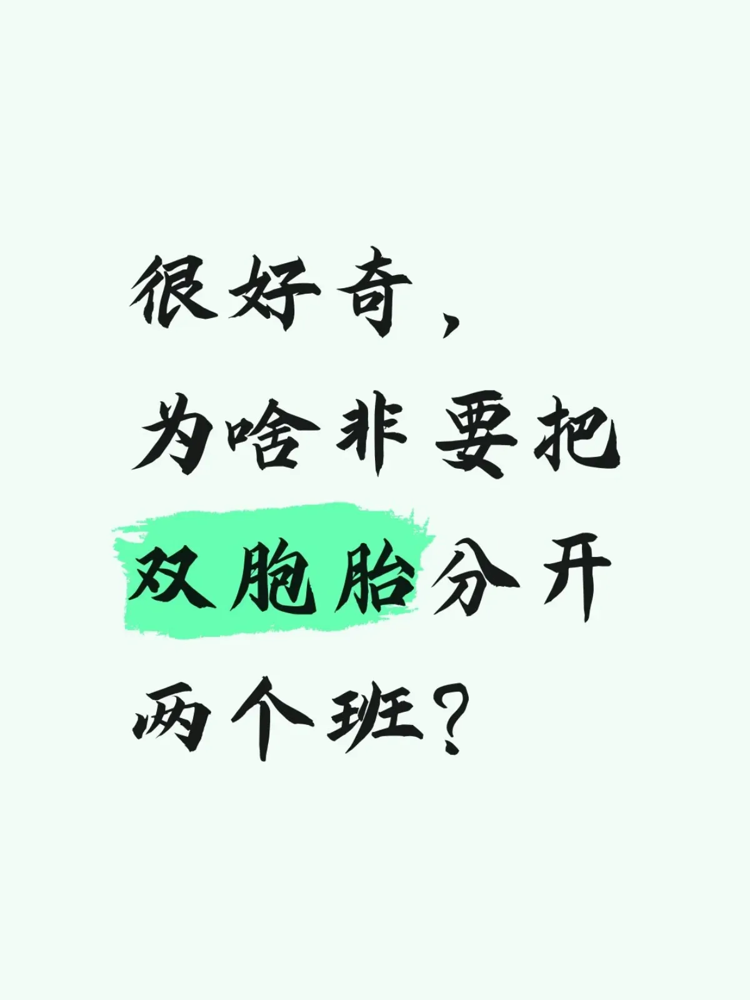
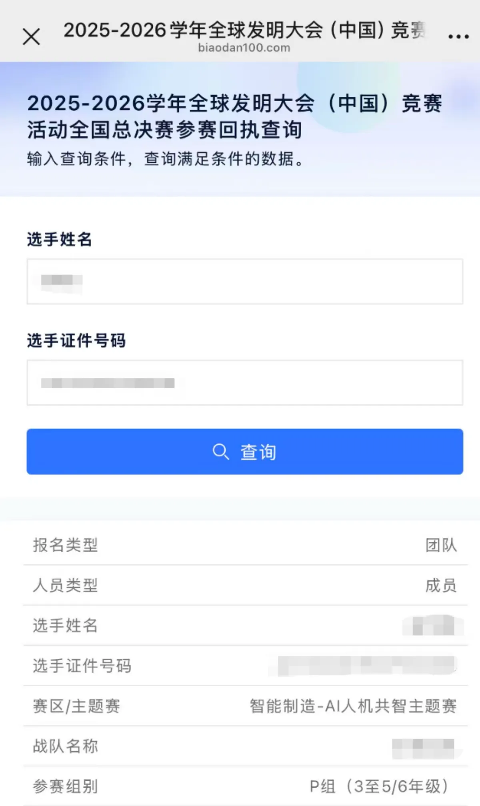
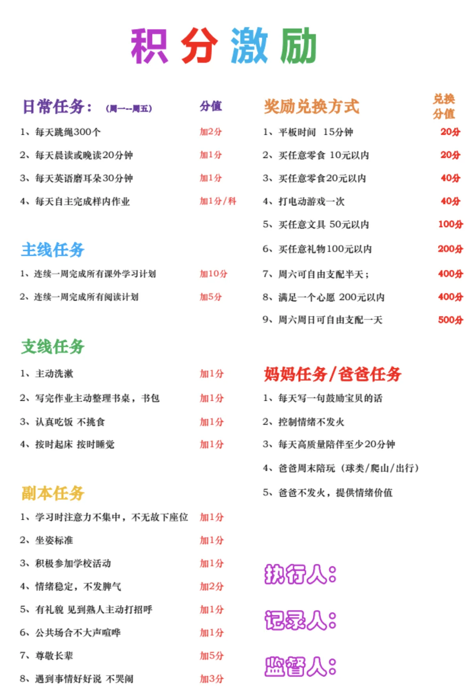
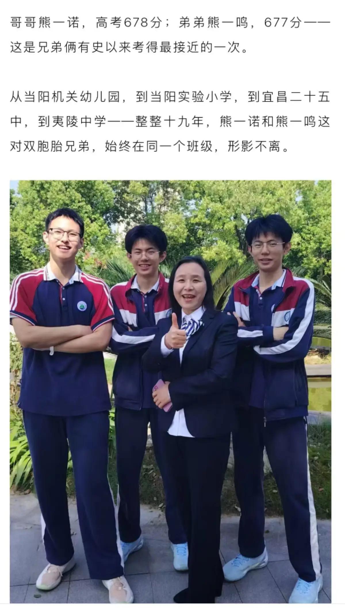
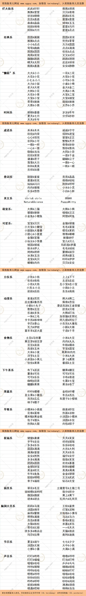
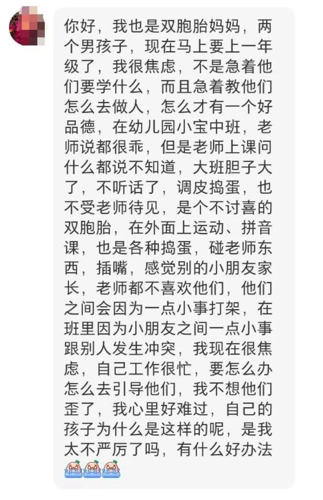

学龄期 6-12 岁
小学阶段的写作业、分班、家长会与升学陪读。
 干货：双胞胎的学习区布置攻略，少踩一个坑是一个
1. 书桌能分开，就尽量分开 这条放第一位。 同卵双胞胎真的只是样子长得像而已，其他的，不能说没关系，只能说，毫不相干，…
2026-11-03
干货：双胞胎的学习区布置攻略，少踩一个坑是一个
1. 书桌能分开，就尽量分开 这条放第一位。 同卵双胞胎真的只是样子长得像而已，其他的，不能说没关系，只能说，毫不相干，…
2026-11-03
 双胞胎之间的一切比较，都是毒药
昨天辅导作业，我犯了一个致命的错误。 圆圆写作业，向来慢， 昨晚上做知训作业，也就两页，总共才6道题， 他在座位上磨蹭了…
2026-10-27
差1分钟的双胞胎兄弟，11年后是这样的...
文|圆圈妈妈 圆圆一直想要个小弟弟， 这个愿望已经持续很多年了。 问题是，他其实已经有一个弟弟， 只比他晚出来1分钟。 …
2026-09-30
双胞胎之间的一切比较，都是毒药
昨天辅导作业，我犯了一个致命的错误。 圆圆写作业，向来慢， 昨晚上做知训作业，也就两页，总共才6道题， 他在座位上磨蹭了…
2026-10-27
差1分钟的双胞胎兄弟，11年后是这样的...
文|圆圈妈妈 圆圆一直想要个小弟弟， 这个愿望已经持续很多年了。 问题是，他其实已经有一个弟弟， 只比他晚出来1分钟。 …
2026-09-30
 双胞胎一起写作业：偷懒有人陪，卡壳会传染，闯祸还能分工
文|圆圈妈妈 辅导圆圈兄弟写作业时， 9种让人气到肝颤的情况， 今日来吐槽.... 如有雷同，评论区扣1， 让我知道，我…
2026-09-23
双胞胎一起写作业：偷懒有人陪，卡壳会传染，闯祸还能分工
文|圆圈妈妈 辅导圆圈兄弟写作业时， 9种让人气到肝颤的情况， 今日来吐槽.... 如有雷同，评论区扣1， 让我知道，我…
2026-09-23

辅导双胞胎写作业：动嘴的合伙搞，动笔的分开干 文|圆圈妈妈 辅导双胞胎写作业，很多家长都会先纠结一个问题： 学习桌到底怎么买？ 买一张长桌，让俩人挨着写？ 还是一人一… 2026-09-21
一个字“夯”！双胞胎父母专属的育儿书 前面几篇都在写适合双胞胎孩子读的绘本， 终于找到啦！双胞胎家庭必读绘本06《双胞胎兄弟》 终于找到啦！双胞胎家庭必读绘本… 2026-09-18 双胞胎兄弟：家里《甄嬛传》，出门《古惑仔》 文|圆圈妈妈 带圆圈兄弟去看常书鸿的画展。 期间，一个小男孩不小心踩到了圆圆的脚。 踩完，人就跑了。 圆圆站在原地，气呼… 2026-09-17 双胞胎的心灵感应，居然连错题都不放过 文|圆圈妈妈 才开学没几天就被老师艾特了。 数学老师说，兄弟俩同一道应用题，错得一模一样。不是错同一个答案，是连列的算式… 2026-09-11 原来双胞胎同班还有这么一个隐蔽的，坑！ 文|圆圈妈妈 新学期开学了，圆圈兄弟六年级。 有一个不太好的消息： 班主任又又又又~换了。 这已经是第五个班主任了！ 我… 2026-09-03
很好奇， 为啥非要把双胞胎分开两个班？ 双胞胎上学到底分不分班？别急着替孩子做决定。 家长们的理由都很现实。支持分开的，怕俩孩子互相依赖、天天被比较。支持同班的… 2026-09-02
带双胞胎一路北上，我下了100部纪录片，用来“续命” 带双胞胎出门旅行，前两个小时是旅游，后两个小时是渡劫。 ——圆圈妈妈 明天，就要开始北上了。 第一站郑州，圈圈要去参加I… 2026-08-12 养双胞胎，最怕分东西的时候剩下1份 在双胞胎家庭，没有一颗肉丸，能安安静静被吃掉！ ----圆圈妈妈 昨天的午餐，我煮了8颗肉丸，原计划圆圈兄弟俩，一人4颗… 2026-08-11 当双胞胎开始反套路，老母亲只能将计就计
没有一劳永逸的招，只有见招拆招的妈。 ——圆圈妈妈 上回写了那篇《流水线操作养双胞胎》，后台炸了。 有姐妹说“救了老命了…
2026-08-07
当双胞胎开始反套路，老母亲只能将计就计
没有一劳永逸的招，只有见招拆招的妈。 ——圆圈妈妈 上回写了那篇《流水线操作养双胞胎》，后台炸了。 有姐妹说“救了老命了…
2026-08-07

用流水线的操作养双胞胎，效果拔群 文|圆圈妈妈 暑假过半，我还没疯。 自我感觉还不赖，截至今日为止，仅爆发过一场亲子大战。相比往年，双胞胎儿子放寒假第10… 2026-07-31 双胞胎长得太像，到底能有多尬？
文|圆圈妈妈 昨天下午，约了学校场馆，陪双胞胎兄弟去打篮球。 出门前我看了眼兄弟俩的装备：一模一样的球衣，一模一样的球鞋…
2026-07-29
双胞胎长得太像，到底能有多尬？
文|圆圈妈妈 昨天下午，约了学校场馆，陪双胞胎兄弟去打篮球。 出门前我看了眼兄弟俩的装备：一模一样的球衣，一模一样的球鞋…
2026-07-29

有一种神仙双胞胎，同班19年，高考只差1分 文|圆圈妈妈 前两天刚写完一对死活不同班的龙凤胎，妹妹北大，哥哥国防科大：这对双胞胎，给所有父母上了一课，今天又刷到一对… 2026-07-27 妹妹北大，哥哥国防科大：这对双胞胎，给所有父母上了一课
文|圆圈妈妈 素材|来源：人民日报、晋江经济报 昨天刷到央视报道的一对龙凤胎。 妹妹黄矜月考入北京大学，哥哥黄今阳考入国…
2026-07-17
妹妹北大，哥哥国防科大：这对双胞胎，给所有父母上了一课
文|圆圈妈妈 素材|来源：人民日报、晋江经济报 昨天刷到央视报道的一对龙凤胎。 妹妹黄矜月考入北京大学，哥哥黄今阳考入国…
2026-07-17

双胞胎的小名换了5轮，从小樱桃小丸子，到翠花麦香……我认输了 投稿|小樱桃小丸子妈妈 排版|圆圈妈妈 【帮主】圆圈妈妈：这是【孖妈来了】栏目的第24篇投稿，是小樱桃小丸子妈妈 ，分享… 2026-07-15
家有不讨喜的双胞胎，我快秃了... 文|圆圈妈妈 某书上，收到的咨询，隔着屏幕都能感受到的焦虑，觉得特别有代表性，也许身为职场妈妈的你正在经历着。我打算这么… 2026-07-08 暑假陪双胞胎不抓狂：这100部动画电影，直接救命
文|圆圈妈妈 今天，神兽出笼。 圆圈兄弟上午考完最后一科，书包一甩，大喊：“妈妈，我们的电影之约，现在开始吧！” 没错，…
2026-07-03
暑假陪双胞胎不抓狂：这100部动画电影，直接救命
文|圆圈妈妈 今天，神兽出笼。 圆圈兄弟上午考完最后一科，书包一甩，大喊：“妈妈，我们的电影之约，现在开始吧！” 没错，…
2026-07-03